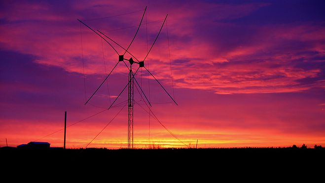
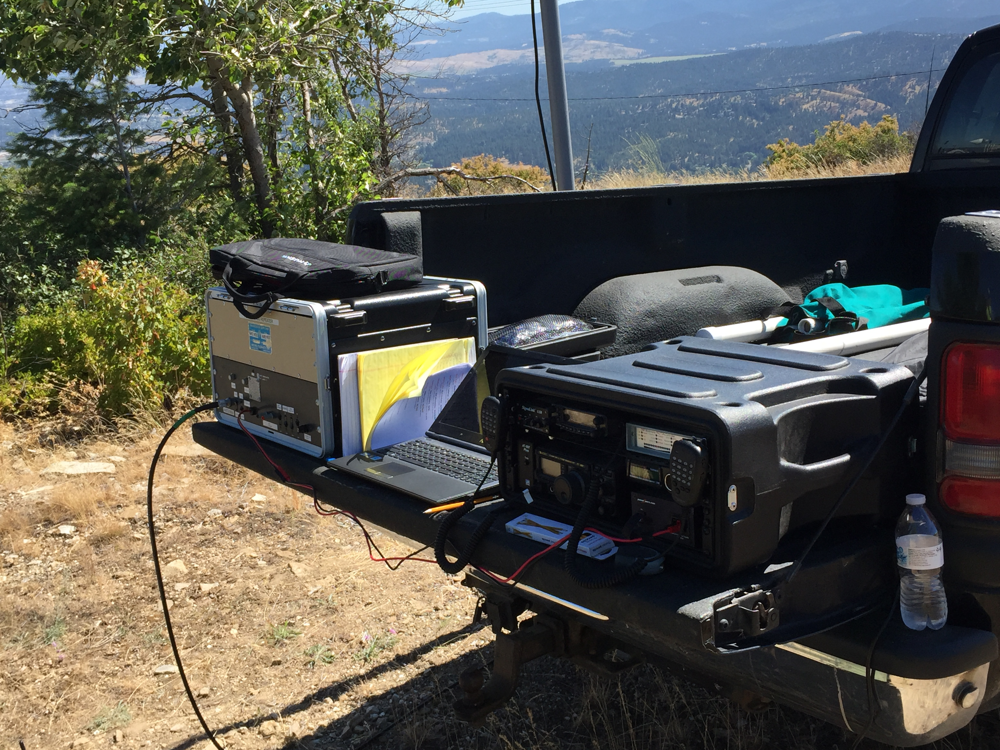
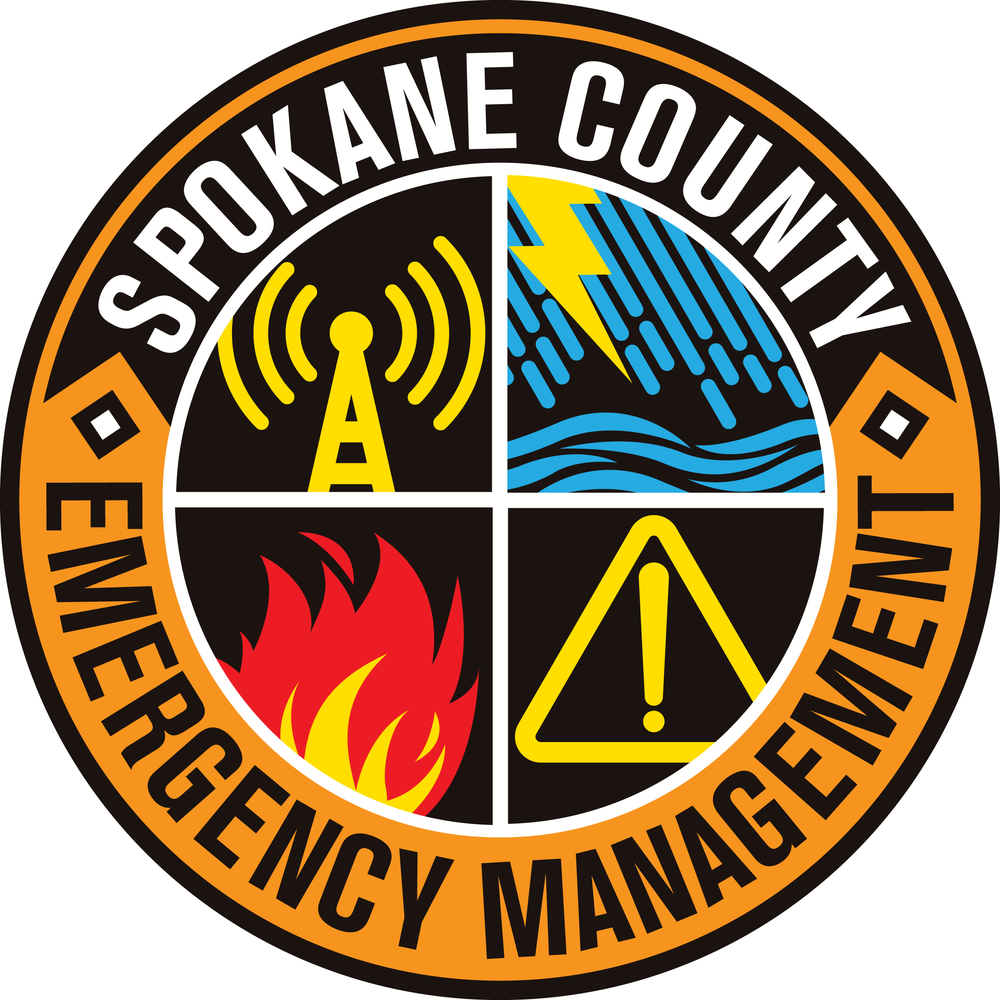

Spokane County ARES-ACS
Backup emergency communications
Spokane County, Washington
W7GBU
- Freq
- 147.300 MHz
- Offset
- +600 kHz
- Tone
- 100 Hz
- Net
- Tuesdays 2000 local
- Mode
- FM
To radio You
73 de W7GBU
Remarks Visitors welcome.
Weekly net Tuesdays at 8:00 PM on W7GBU 147.300 MHz (+600 kHz, 100 Hz tone). Visitors welcome.
Nets and meetingsSpokane County ARES-ACS is a team of licensed amateur radio (“ham”) volunteers. We provide backup communications for Spokane County Emergency Management, hospitals, the National Weather Service and community events when normal systems are overloaded or down.
Not licensed yet? You can still listen in. Start with card 1.
“He was a person who made a difference in Spokane by making others feel like they could make a difference themselves.”
Spokane County ARES-ACS
Backup emergency communications
Spokane County, Washington
W7GBU
To radio You
73 de W7GBU
Remarks Visitors welcome.

W7GBU is our call sign and the ID of our repeater. It is a memorial call for Ira “Dean” Bula.
Dean started an informal morning round table he called the 7:30 Bunch. It still runs as the 0730 Bunch, Monday to Friday at 7:30 AM on the same 147.300 repeater. verify
“An emergency is a poor time to be handing out business cards.”
That is why we meet on the air every Tuesday. When Spokane County needs backup communications, the operators already know each other.
You may know us as Spokane County ARES/RACES. The county’s RACES program continues as ACS, so today we are Spokane County ARES-ACS.
Joining the team takes five steps, and each one is a card. Turn a card over to see what it takes, then mark it collected when it’s yours. Already licensed? Collect card 2 and head straight for Worked.
Card 1 of 5
Listen to the Tuesday net. You don’t need a license to listen.
147.300 MHz FM, Tuesdays 2000
When it’s real: members check in with net control on W7GBU 147.300. Knowing how the net sounds is the first skill.
Card 2 of 5
Earn an FCC Technician license or higher.
Technician class or higher
When it’s real: your license is what lets you transmit for Spokane County when normal systems are down.
Already have your call sign? Mark this one collected.
Card 3 of 5
Check in to the Tuesday net as a visitor.
147.300 MHz, +600 kHz, tone 100 Hz
When it’s real: the Tuesday net is a directed net that doubles as weekly emergency-operations training.
Card 4 of 5
Join ARES with the Spokane County ARES registration form.
Open to any licensed ham
When it’s real: ARES members can support community events, the National Weather Service and the Red Cross without an emergency being declared.
Card 5 of 5, optional
Qualify for ACS so Spokane County Emergency Management can call on you.
County application and background check
When it’s real: ACS members can be activated by the county and work inside emergency operations centers, incident command posts, hospitals and shelters.
Hams trade QSL cards to confirm a contact. Here’s one addressed to you, with your next step typed into the remarks. Download it, share it, or pin it by your radio.
Spokane County ARES-ACS
Backup emergency communications
W7GBU
To radio Your call
Our first contact, scheduled
| Date | Local | MHz | Mode | Confirmed |
|---|---|---|---|---|
| Tue 29 Sep 2026 | 2000 | 147.300 | FM | After check-in |
Remarks Check in as a visitor on Tuesday at 2000 local. Net control calls for visitors after members.
Licensed amateur radio volunteers providing backup emergency communications for Spokane County.
Pse QSL, 73 de W7GBU
The remarks follow your stack above. Proposed for the live site: after a first check-in, net control could send you a confirmed version of this card.
We are one team of licensed amateur radio operators who volunteer to provide backup communications when normal systems are overloaded or down. The team has two sides.
Amateur Radio Emergency Service
A national ARRL program open to any licensed ham. ARES members can support community events, the National Weather Service and the Red Cross without an emergency being declared.
Auxiliary Communications
Spokane County Emergency Management’s own volunteer communications unit. It carries on the county’s RACES program (Radio Amateur Civil Emergency Service), the FCC provision that lets hams operate for government during emergencies.
ACS members have passed a county background check, so the county can activate them to work inside emergency operations centers, incident command posts, hospitals and shelters.
You can join ARES only, or both. The two sides train and operate together. Even if you don’t or can’t qualify for ACS, our ARES group welcomes you.

We run the W7GBU-10 Winlink gateway. Every two weeks, members send practice messages on ICS-213 forms, so email-style traffic still moves when the internet doesn’t.
W7GBU-10 gateway, ICS-213
When Spokane County Emergency Management activates us, members staff the county’s radio room and comm trailer.
Our hospital coordinator works with Greater Spokane area hospitals to keep backup radio and computer equipment in place and working. A Hospital Net follows the regular net.

Primary or backup communications for Bloomsday, the Lilac Torchlight Parade, fun runs and bicycle races.

Many members are trained spotters for the National Weather Service in Spokane. We activate nets in severe weather.
NWS WXL86, 162.400 MHz
Drills keep the skills sharp: the annual Simulated Emergency Test, joint exercises such as ARES-ACS with WSDOT, the Great ShakeOut and the state COMMEX. Second Saturday Workshops cover hands-on work like emergency power and mobile installs.
Next up: SET, Sat 3 Oct 2026All times are local. In-person meetings are at the Spokane County Emergency Management building, 1121 W. Gardner Ave, next to the county courthouse.
W7GBU, Spokane County ARES-ACS
| When | Time | Where | What | Notes |
|---|---|---|---|---|
| Tuesdays | 2000 | 147.300 MHz +600 kHz, 100 Hz | Weekly net | Directed training net. Visitors check in after members. |
| Mon–Fri | 0730 | 147.300 MHz | 0730 Bunch | Dean Bula’s informal morning round table. verify |
| 3rd Thursday | [time TBC] | DEM building | Training meeting | Monthly training, such as shelter operations. |
| 2nd Saturday | 0900–1200 | DEM building | Second Saturday Workshop | Hands-on: TNC setups, emergency power, mobile installs. |
| 4th Tuesday | 1800 | DEM building | New Member Orientation | Usually monthly. Comm room tour, then the 8 PM net. |
| 3rd Tuesday | 1930 | GMRS 7, 462.700 MHz, 141.3 Hz | ACS GMRS net | verify |
| Mon, Sat | Mon eve, Sat 0900 | 3.985 MHz LSB | WA State Emergency Net | Statewide HF net. |
| Date | Time | What | Notes |
|---|---|---|---|
| Sat 26 – Sun 27 Sep | — | ARES-ACS / WSDOT exercise | Joint exercise. |
| Sat 3 Oct | — | Simulated Emergency Test (SET) | The annual national exercise. |
| Tue 6 Oct | after 2000 | Hospital Net | Follows the regular Tuesday net. |
| Sat 10 Oct | 0900–1200 | Second Saturday Workshop | DEM building. |
| Thu 15 Oct | [time TBC] | Third Thursday training meeting | Same day: Great ShakeOut “Did You Feel It” message. |
| Sat 17 Oct | — | SHARES training meeting | |
| Sat 24 Oct | — | State COMMEX | Statewide communications exercise. |
“The mission of Spokane County ARES/RACES is to support and enhance the telecommunications needs of its served agencies with the versatile talents and flexible resources of trained and competent amateur radio operators, thereby serving the public interest in times of emergency or special need.”
When the county activates us, it obtains a state mission number, so volunteers are covered under RCW 38.52.
We are an auxiliary support function, not first responders.
